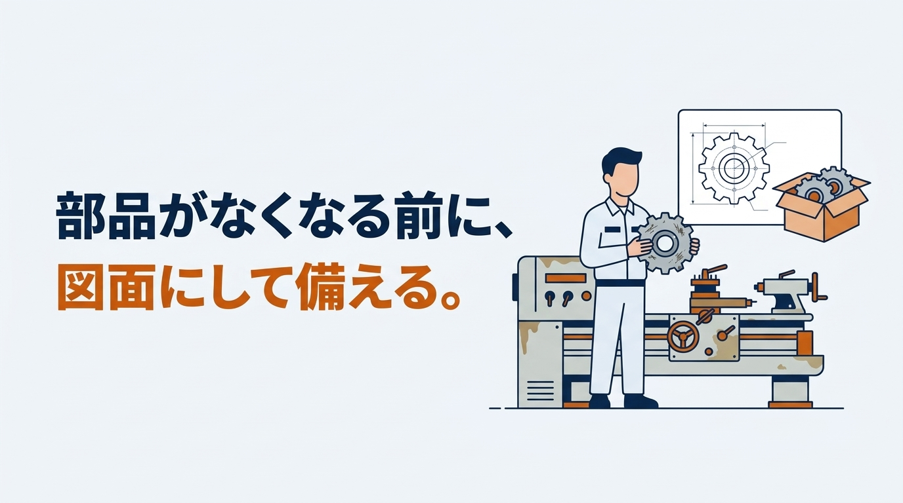
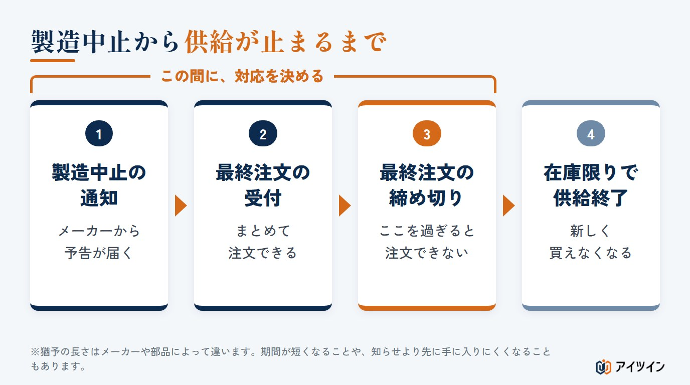
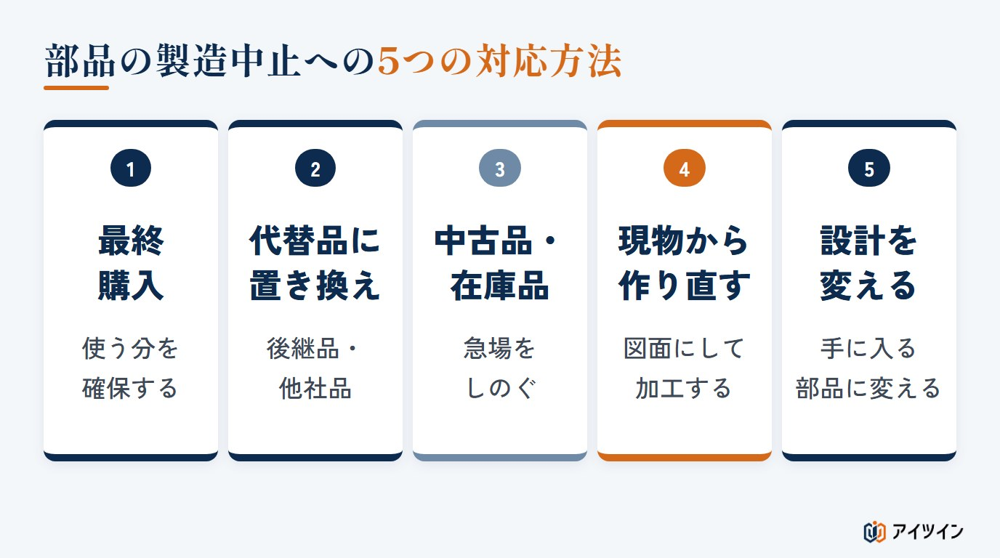
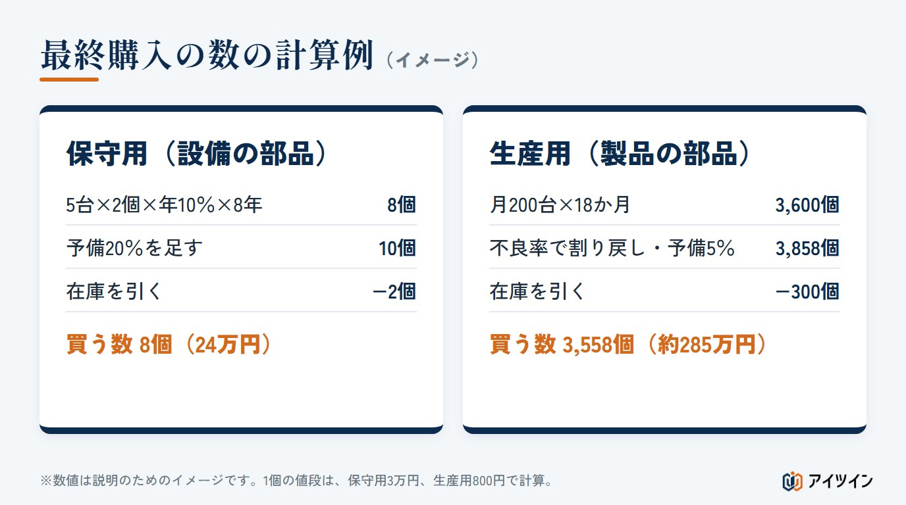
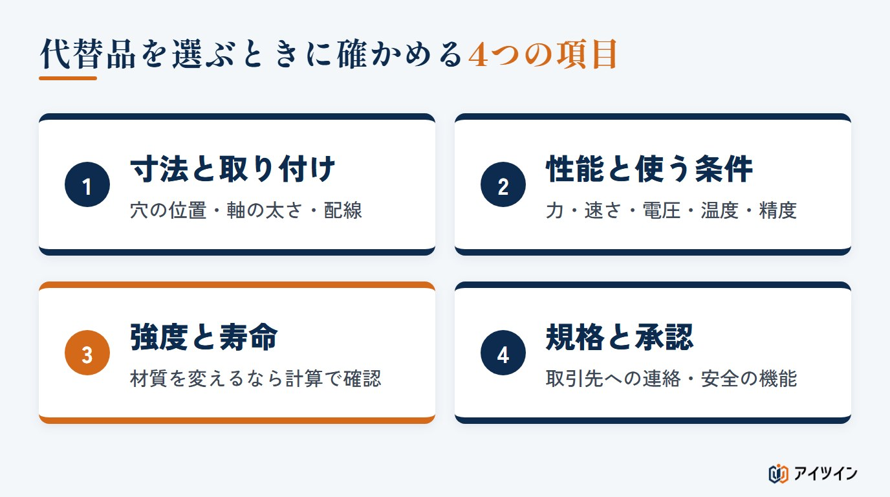
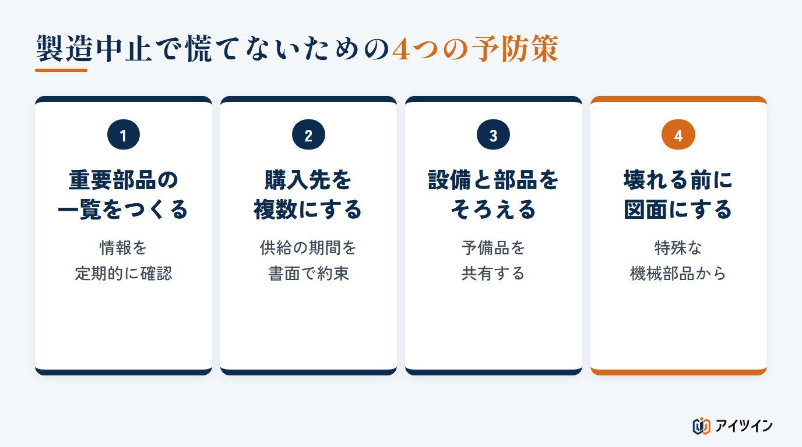

「使っている部品が、来年で製造中止になると通知が来た」「設備の部品が壊れたが、作っている会社がもうない」。製造の現場では、部品の製造中止は避けて通れない問題です。対応が遅れると、製品が作れなくなったり、設備が止まったまま直せなくなったりします。
本記事では、部品の製造中止への対応を、通知を受けたときに最初に確かめること、5つの対応方法、最終購入の数の決め方、代替品の選び方、予防策の順に解説します。後半では、生産設備の部品が製造中止になったときに、設備を延命するか更新するかの考え方を、保全の現場の経験も交えてご紹介します。
この記事でわかること
- 製造中止の通知を受けたら最初に確かめることと、5つの対応方法
- 最終購入の数の決め方（計算ツールつき）と、代替品を選ぶときの確認項目
- 製造中止で慌てないための予防策と、生産設備を延命するか更新するかの考え方
部品の製造中止とは｜生産終了・EOL・廃番と、供給が止まるまでの流れ
製造中止・生産終了・EOL・廃番は、現場では近い意味で使われる
部品の製造中止とは、メーカーがその部品を作るのをやめ、新しく買えなくなることです。「生産終了」「廃番（はいばん）」「ディスコン」とも呼ばれ、英語の End of Life を略して「EOL」と書かれることもあります。ただし、メーカーによっては、生産の終了、最終注文の締め切り、最終出荷、修理やサポートの終了を、別々の日付で管理しています。EOLの通知が出ても、すぐに買えなくなるとは限らないため、通知の文面で、最終注文日（LTB）と最終出荷日（LTS）を確かめることが大切です。
通知から供給が止まるまでの流れ
半導体のメーカーなどでは、製造中止を前もって知らせ、最後の注文を受け付ける期間と、最後に出荷する時期を設けることがあります。この最後のまとめ買いを「ラストタイムバイ（最終購入）」と呼びます。ただし、知らせる時期や注文の期限はメーカーや部品によって違い、事情によって短くなることもあります。流通している在庫が減ったり、部品の材料の供給が止まったりして、正式な知らせを目にする前に手に入りにくくなることもあるため、重要な部品は、ふだんから供給の状況を確かめておくことが大切です。

製品の部品と、生産設備の部品では困り方が違う
製造中止で困る部品には、自社の製品に組み込む部品と、自社の生産設備に使われている部品があります。前者は製品を作り続けられなくなり、後者は壊れたときに交換できず、設備が止まったまま直せなくなります。生産設備の部品は、壊れるまで製造中止に気づかないことが多いのが特徴です。
この章のまとめ
- 製造中止・EOLなどは近い意味だが、最終注文日と最終出荷日は分けて確かめる
- 通知から最終注文の締め切りまでの間に、対応を決める
- 生産設備の部品は、壊れるまで製造中止に気づかないことが多い
製造中止の通知を受けたら、最初に確かめる4つのこと
対応の方法を考える前に、次の4つを確かめます。
1. どの製品・どの設備に使っているか
同じ部品が、複数の製品や設備に使われていることはよくあります。部品表や設備の台帳から、使っている所をすべて洗い出します。生産設備の場合は、設備ごとの部品の一覧がないことも多いため、この機会に、設備の型式と中の主な部品を書き出しておくと、次の製造中止にも備えられます。
2. 今の在庫と、いつまで足りるか
社内の在庫と、取引先や商社が持っている在庫を確かめ、今の使い方なら何か月もつかを出します。保守用の部品なら、これまでの交換の記録から、1年に何個使っているかを確かめます。
3. 最終注文の締め切りと、後継品の有無
メーカーの通知で、最終注文の締め切り日と、推奨する後継品があるかを確かめます。後継品があっても、寸法や性能が同じとは限りません。
4. 誰が、いつまでに決めるか
製造中止の対応には、購買、設計、品質、保全など、複数の部署が関わります。担当と決める期限を最初に決めておかないと、締め切りを過ぎてしまいます。対応の経過を記録に残しておくと、次に同じことが起きたときにも役立ちます。
この章のまとめ
- 部品を使っている製品と設備を、すべて洗い出す
- 在庫がいつまでもつかと、最終注文の締め切り、後継品の有無を確かめる
- 担当と決める期限を最初に決め、経過を記録に残す
部品の製造中止への主な5つの対応方法
製造中止への主な対応は、次の5つです。部品によっては、修理や再生、ユニットごとの交換、設備全体の更新も選択肢になります。1つだけを選ぶのではなく、部品の重要度や設備を使う残りの年数、費用、品質と安全を比べて、組み合わせて使います。

対応1：最終購入で、必要な数を買っておく
締め切りまでに、今後使う分を一度に確保する方法です。手早い方法ですが、使う数を読み違えると、不足や余りが出ます（数の決め方は次の章）。
対応2：代替品・互換品に置き換える
メーカーの後継品や、他社の同じような部品に置き換える方法です。寸法や性能のわずかな違いで、取り付けの部品やプログラムの変更が必要になることもあります。元の部品と代替品の仕様書を並べ、違いを書き出すと見落としを防げます。
対応3：中古品や、他社の在庫品を探す
中古品の販売店や、在庫を持つ商社から探す方法です。急場をしのぐには有効ですが、本物かどうか、状態や保管の経緯、残りの寿命が分からないことも多く、長く続けられる方法ではありません。使う前に動作を確かめ、手に入れた時期と状態を記録しておくと、あとで原因を追いやすくなります。
対応4：現物から図面を起こして、作り直す
図面がない機械部品は、形や寸法、材質、加工の条件が分かれば、現物を測って図面にし、作り直せることがあります。測る、図面にする、材質と強度を確かめる、加工する、という流れです。ブラケットや軸、カラー、板のような機械加工の部品は、メーカーがなくなっても作り直しを検討しやすいのが、この方法の強みです。一方、電子部品や基板は、多層の配線や専用のIC、中のプログラムなどが関わるため、同じ働きを再現するには高度な解析が要る場合があります。ただし、基板全体を作り直さなくても、壊れた部品の交換で直せることもあります。
現物から測るときは、すり減ったり欠けたりした部分を、元の寸法に戻して考える必要があります。穴と軸のすき間（はめ合い）、表面の仕上げ、熱処理や表面処理、材質も確かめます。たとえば、焼き入れした軸を、普通の鋼材で同じ寸法に削っただけでは、すり減りにくさや寿命が同じになるとは限りません。材質が分からない場合は、成分を分析して調べることもあります。
対応5：設計を変えて、別の部品で置き換える
代わりの部品がそのまま使えない場合は、周りの設計を変えて、手に入る部品に合わせます。時間と費用はかかりますが、製造中止の心配をしばらく減らせます。
| 対応方法 | 速さ | 費用 | 続けられる期間 |
|---|---|---|---|
| 最終購入 | 速い | 部品代と保管費 | 買った数まで |
| 代替品 | やや速い | 確認・変更の費用 | 代替品が続く間 |
| 中古品・在庫品 | 速い | 部品代 | 短い |
| 現物から作り直す | 中くらい | 図面化と加工 | 図面がある限り |
| 設計を変える | 遅い | 大きい | 長い |
この章のまとめ
- 主な対応は、最終購入・代替品・中古品・作り直し・設計変更の5つ
- 機械加工の部品は、材質や熱処理まで確かめれば作り直しを検討しやすい
- 速さ、費用、続けられる期間を比べて、組み合わせて使う
最終購入の数の決め方｜計算例と計算ツール
最終購入では、「これから何個使うか」を見積もり、予備（安全在庫）を足し、使える在庫と、期限内に届く注文済みの数を引いた数を買います。保守用と生産用で、見積もり方が少し違います。数字は説明のための例です。
保守用の部品は「台数 × 交換の割合 × 使う年数」で見積もる
設備の交換部品の例です。同じ設備が5台あり、1台に2個使っている部品が、1年に1割ほど故障などで交換になっているとします。設備はあと8年使う予定です。ここでの交換の割合は、「設置されている部品の数に対して、1年に交換した数の割合」です。
使う見込み ＝ 5台 × 2個 × 10％ × 8年 ＝ 8個
予備20％を足す ＝ 8 × 1.2 ＝ 9.6 → 10個
買う数 ＝ 10個 − 在庫2個 ＝ 8個（1個3万円なら24万円）
この8個は、平均的な交換の数の見積もりで、足りることを保証する数ではありません。設備の台数がこの先減るか、壊れた部品を修理して使えるか、決まった周期で交換する部品か、注文してから届くまでの期間、1個足りないと設備全体が止まるか、といった点も考えて予備を決めます。

生産用の部品は「月の使用数 × 作り続ける月数」で見積もる
製品に組み込む部品の例です。月に200台作る製品に1個ずつ使っていて、製品はあと18か月作る予定です。投入した部品のうち、不良や試験で失う割合（不良率）を2％、予備を5％とします。
使う見込み ＝ 200台 × 1個 × 18か月 ＝ 3,600個
不良の分を割り戻す ＝ 3,600 ÷（1 − 0.02）＝ 約3,673.5個
予備5％を足す ＝ 3,673.5 × 1.05 ＝ 約3,857.1 → 3,858個
買う数 ＝ 3,858個 − 在庫300個 ＝ 3,558個（1個800円なら約285万円）
不良率が「投入した数に対する不良の割合」なら、×（1＋不良率）ではなく ÷（1−不良率）で計算します。×1.02 だと、必要な良品の数にわずかに届きません。
買いすぎにも注意する
多めに買うと、保管の場所と費用がかかり、使わなかった分は損になります。ゴムや樹脂の部品、電池、一部の電子部品のように、使わなくても保管している間に劣化する部品もあります（ゴムの硬化やひび、樹脂の吸湿による寸法の変化、電池の自然な放電、電子部品の端子のさびなど）。メーカーが指定する保管の条件と使用の期限も確かめます。最終購入は、ほかの対応までの「つなぎ」と考え、その間に代替品や作り直しを進めるのが現実的です。
自分の条件で試す｜最終購入の数の計算ツール
初期値は、上の保守用の例です。「生産用」に切り替えると、生産用の例の条件になります。
ラストタイムバイ（最終購入）の数の計算
保守用は「設備の台数 × 1台あたりの使用数 × 1年に交換する割合 × 使い続ける年数」、生産用は「月の生産数 × 1台あたりの使用数 × 作り続ける月数」を不良率で割り戻して（÷（1 − 不良率））、使う見込みの数を出します。そこに予備を足し、使える在庫と、期限内に届く注文済みの数を引いた数が、買う数の目安です。結果は目安で、必要な数を保証するものではありません。交換の割合は、設置されている部品の数に対する1年の交換数の割合で、これまでの交換の記録から出すのが確実です。予備は、交換の数のばらつき、届くまでの期間、止まったときの影響を考えて決めてください。長く保管すると劣化する部品は、保管の条件と、使える期間も確かめてください。
部品の使い道
結果
| 使う見込みの数 | 個 |
|---|---|
| 予備などを含めた必要数 | 個 |
| 買う数（在庫と注文済みを引いた数） | 個 |
| 購入金額の目安 | 円 |
この章のまとめ
- 保守用は台数・交換の割合・使う年数、生産用は月の使用数・月数で見積もる
- 予備を足し、使える在庫と注文済みの数を引く。生産用の不良率は割り戻す
- 買いすぎにも注意し、最終購入はほかの対応までのつなぎと考える
代替品を選ぶときに確かめる4つの項目
代替品は「同じような部品」を探すだけでは足りません。置き換えたあとに不具合が出ないよう、次の4つを確かめます。

寸法と取り付け（穴の位置・軸の太さ・つなぎ口）
外形の大きさ、取り付け穴の位置、軸の太さ、配線のつなぎ口の形などを、元の部品と比べます。わずかな違いでも、取り付けの板や配線を変える必要が出ます。
性能と使う条件（力・速さ・電圧・温度・精度）
力や速さ、電圧や温度の範囲、精度などが、今の使い方を満たすかを確かめます。カタログの数字が同じでも、測り方の条件が違うことがあります。
強度と寿命（材質が変わる場合）
機械部品を作り直すときや、材質の違う代替品にするときは、強度と寿命を確かめます。元の部品より弱い材料にすると、早く壊れたり、周りの部品を傷めたりします。力がかかる部品は、強度計算で余裕を確かめておくと安心です。
規格と、取引先の承認
製品に使う部品を変える場合は、製品が満たすべき規格や、取引先との取り決めを確かめます。部品を変えたことを取引先に知らせ、承認を得る必要がある場合もあります。承認に時間がかかることもあるため、早めに相談を始めます。
非常停止のスイッチや安全センサーなど、安全に関わる部品は、寸法や電気の仕様が合うだけでは足りません。置き換えたあとも、設備全体の安全の働きが保たれ、求められる安全性能（PLやSILなど）を満たすかを確かめます。必要に応じてリスクアセスメントをやり直し、止まるまでの時間などを、実際に動かして確かめます。
この章のまとめ
- 寸法と取り付け、性能と使う条件を、元の部品と比べる
- 材質が変わるときは、強度と寿命を確かめる
- 規格と取引先の承認、安全に関わる部品は交換後の安全性能まで確かめる
製造中止で慌てないための4つの予防策｜重要度で分けて備える
製造中止は、起きてから動くと選べる手が限られます。ただし、すべての部品を大量に買い置くのは、お金と場所、劣化の点で現実的ではありません。まずは部品を重要度で分け、手間のかけ方を変えます（分け方は一つの例です）。
| 分類 | 部品の例 | 主な備え |
|---|---|---|
| A：止まると影響が大きい・安全に関わる | 制御装置、専用の駆動装置、安全部品 | 早めの確認、代替品の評価、予備の確保 |
| B：止まるが代わりがある | センサー、汎用モーター、電磁弁 | 代替品を前もって評価、購入先を分ける |
| C：作り直しやすい | ブラケット、カラー、機械加工の部品 | 図面を整える、作り直しを検討 |
そのうえで、次の4つで備えます。

重要な部品の一覧をつくり、製造中止の情報を定期的に確かめる
止まると影響が大きい部品、ほかに買える所がない部品を一覧にし、メーカーの情報を定期的に確かめます。一覧には、部品の名前と型番、使っている製品や設備、使う数、購入先、代わりの部品の有無、メーカーの製品の状況、最終注文日と最終出荷日、在庫と年間の使用数、止まったときの影響を並べておくと便利です。年に1〜2回でも見直すだけで、通知を見落とすことが減ります。
購入先を複数にし、長く供給してもらう約束を書面にする
同じメーカーの部品を複数の販売店から買えるようにしても、メーカーが作るのをやめれば、どこからも買えなくなります。別のメーカーの代替品を前もって評価しておくことが大切です。長く使う部品は、製造中止の知らせの時期、最終注文日、最終出荷日、代替品の情報などを、口約束ではなく書面で取り決めておきます。ただし、取り決めがあっても、相手の倒産や災害などによる供給の停止まで、すべて防げるわけではありません。
設備と部品を、できるだけ同じものにそろえる
同じ種類の設備や部品にそろえておくと、予備品を共有でき、余分な在庫を持たずに済みます。設備を更新するときも、古い設備を一部残しておけば、部品を取り外して予備品として使えます。ただし、共有する前に、取り付け、性能、設定、安全の働きが合うかを確かめます。また、1つの型番にそろえすぎると、その型番が製造中止になったときに、多くの設備が同時に困ることにも注意します。
特殊な機械部品は、壊れる前に図面にしておく
図面のない特殊な機械部品は、壊れてからでは、元の形が分からなくなることがあります。壊れる前に現物を測って図面にしておけば、製造中止になっても作り直せます。設備の中で、代わりがなく、止まると生産が止まる部品から優先して進めます。
この章のまとめ
- 重要な部品の一覧をつくり、製造中止の情報を定期的に確かめる
- 購入先を複数にし、供給の期間を書面で取り決める
- 設備と部品をそろえ、特殊な機械部品は壊れる前に図面にする
生産設備の部品が製造中止になったとき｜延命か、更新か
生産設備の部品が手に入らなくなったとき、選択肢は大きく「設備を使い続ける（延命）」か「設備を新しくする（更新）」かです。保全の現場の目線でお話しします。
「次に壊れたら、生産できない」と言われた会社の例
以前に耳にした、ある印刷会社の話です。古い設備の中の機械部品が壊れ、調べたところ、その部品を作っている会社はもうありませんでした。「次に壊れたら、生産できなくなります」と伝えられた会社は、融資を受けて設備を更新しました。
更新によって、部品の心配はなくなりました。ただ、今後の受注の見通しによっては、大きな投資をする以外の道もあったのではないか、とも考えています。壊れた部品が機械部品であれば、現物から図面を起こして作り直せた可能性があるからです。特殊な機械部品を前もって調べ、早めに図面にしておけば、「部品が手に入らないから更新するしかない」という状況は防げます。
延命か更新かは「これから何年使うか」で決める
延命か更新かは、部品が手に入るかどうかだけでは決まりません。次のような点を合わせて考えます。
- その設備で作る製品の需要が、これから何年続く見込みか
- 部品の作り直しや代替品にかかる費用と、更新の費用の差
- 製造中止の部品が、機械部品か、電子部品か（作り直しやすさが違うことが多い）
- 更新すると、生産性や品質、省力化でどれだけ得をするか
機械加工の部品の作り直しは、設備の更新より少ない費用で済むことがよくあります。ただし、ほかの部分も古く、次々と壊れるようなら、延命の費用はかさみます。この先数年の修理の見込みも合わせて比べます。需要の見通しが短いなら、部品の作り直しで延命し、その間に次の手を考える。長く使うなら、更新して生産性を上げる。部品の問題を、設備投資を見直すきっかけにすると考えると、判断を誤りにくくなります。
保全の現場では、機械部品は作り直し、電装品は予備で備えた
筆者が保全を担当していたころも、製造中止の部品はよくある問題でした。機械部品が欠けたり壊れたりしたときは、自分たちで作り直して修理していました。基板の故障では、メモリーなどの部品が原因の場合は修理できませんでしたが、コンデンサーを交換して復旧できたこともあります。
ただし、基本的に電装品は修理が難しいものです。そのため、同じ設備を複数そろえて予備品を共有し、余分な在庫を持たないようにする。設備を更新するときも、古い設備を一部残して、部品を取り外して使える予備にする。こうした備え方が、電装品の製造中止には効果的でした。
この章のまとめ
- 機械部品の製造中止は、図面にして作り直せば更新を避けられることがある
- 延命か更新かは、需要の見通しと費用、部品の種類を合わせて決める
- 修理が難しい電装品は、設備をそろえる、古い設備を部品取りに残すなどで備える
アイツインの製造中止部品の対応支援
アイツインは、保全と機械設計の経験をもとに、製造中止になった機械部品の「作り直し」と、設備の延命を支援しています。
「設備を更新するしかない」の前に、ほかの道を一緒に考える
「部品が製造中止で手に入らないから、設備を更新するしかない」と言われたとき、本当にそれしか道がないのか。大きな設備投資や更新が、今の受注の見通しに見合っているのか。こうしたご相談もお受けしています。部品の作り直しや代替品で延命できるか、延命と更新で費用と効果がどう違うかを、保全と設計の目線で整理します。
現物を測って、図面にする
図面のない機械部品を、現物から測って図面にします。形が複雑な部品は、3Dスキャンでデータにしてから図面にすることもできます。すり減った部分は、周りの部品との組み合わせから元の寸法を考えて図面にします。壊れる前の予防として、設備の中の特殊な部品をまとめて図面にしておくご依頼もお受けしています。
代わりの部品の取り付けと、強度を確かめる
代替品に置き換えるときの取り付け寸法の確認や、作り直す部品の材質を変えるときの強度計算を行います。計算の考え方は「自動化設備の設計ノート」でも公開しています。
作り直しの手配と、制御機器の置き換えのご相談
図面をもとにした機械部品の作り直しの手配や、製造中止になった制御機器（コントローラーやモーターなど）の置き換えのご相談もお受けしています。なお、電子回路や基板の再設計は、対象外です。
まとめ
本記事では、部品の製造中止への対応を、初動から予防策、設備の延命と更新の考え方まで解説しました。
製造中止は、通知を受けてから慌てても、選べる手は限られます。重要な部品を一覧にし、特殊な機械部品は壊れる前に図面にしておく。部品の製造中止への対応は、起きる前の備えで、選べる手が大きく変わります。まずは、止まると困る設備の中に、代わりのない部品がないかを確かめることから着手してみてください。
参考
・IEC 62402:2019 Obsolescence management（国際電気標準会議）
・経済産業省「経済安全保障上の課題への対応（民間ベストプラクティス集 第2.0版）」
・厚生労働省「機能安全による機械等に係る安全確保に関する技術上の指針」
・本記事の計算の数字は、説明のための例です。必要な数や、部品の安全性を保証するものではありません。